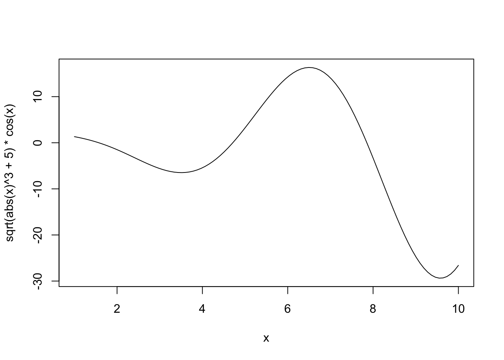
STA 9890 - Supervised Learning: I. Regularization & Shrinkage
\[\newcommand{\by}{\mathbf{y}} \newcommand{\Ycal}{\mathcal{Y}}\]
This week, we continue our discussion of ‘fancy’ regression from last week to consider non-linear models. While we introduce several methods for non-linear regression, we also pause to consider when non-linear methods can actually be expected to outperform linear methods.
Also note that we are arguably being a bit ‘sloppy’ about what we mean by ‘linear’ methods. For purposes of these notes, we define a ‘linear’ method as one where the fitted model has a linear response to changes in the inputs; formally, one where
\[\frac{\partial y}{\partial x_i} = \beta_i \text{ (a constant) for all } i \in \{1, \dots, p\}\]
This definition includes things like best-subsets and lasso regression, which are not linear functions of \(\by\), but excludes things like polynomial regression.1 In the above definition, each \(\beta_i\) is essentially a regression coefficient, and values of \(i\) where \(\beta_i = 0\) are non-selected variables if we are using a sparse method.
Non-Linearity via Linear Combination of Non-Linear Parts
We have spent the previous few weeks developing a set of tools for building linear models of \(\by\). Specifically, we have sought ways to approximate \(\E[y | \bx]\) as a weighted sum of each \(x_i\):
\[ \E[y | \bx] \approx \langle \bx, \hat{\bbeta} \rangle = \sum_{i=1}^p x_i \hat{\beta}_i\]
For situations where the relationship is nearly (or even truly) linear, this approximation can be quite useful and good estimates of the \(\beta_i\) coefficients can lead to accurate estimates of \(\E[y | \bx]\), and ultimately accurate prediction of test set response \(\by\). Using the bias-variance decomposition, we have seen that it is often worthwhile to accept a bit of bias in estimation of each \(\beta_i\) if it is compensated by a worthwhile reduction in the variance of \(\beta_i\).
We can further refine this equality by decomposing bias a bit further:
\[\text{MSE} = \text{Irreducible Error} + \text{Variance} + \text{Model Bias}^2 + \text{Estimation Bias}^2\]
Here, we have decomposed \(\text{Bias}^2\) into two terms:
- \(\text{Model Bias}^2\): a measure of the systematic error arising from use of a linear model to predict a non-linear DGP
- \(\text{Estimation Bias}^2\): a measure of the systematic error arising from use of a regularized estimation procedure which exhibits shrinkage
Put another way, “Model Bias” results from use of a linear model when something non-linear should be used, while “Estimation Bias” arises from the use of a biased method (like ridge regression) instead of something nominally unbiased like OLS. For the previous two weeks, we have mainly focused on linear models for linear DGPs, so model bias has been zero. If we expand our gaze to non-linear DGPs, we have to deal with model bias a bit more directly. As with estimation bias, it is frequently worthwhile to accept model bias to reduce variance; see more discussion below.
Polynomial Expansion
You have likely already seen polynomial expansion (or polynomial regression) in previous courses. Essentially, PE fits a low(-ish)-order polynomial instead of a line to data. More formally, let \(f(\bx) \equiv \E[y|\bx]\) be the regression function (best possible predictor) that week seek to approximate from noisy observations. Standard linear regression essentially seeks to fit a first-order Taylor approximation of \(f\) around some point \(\overline{\bx}\):
\[\begin{align*} f(\bx) &\approx f(\overline{\bx}) + \nabla_f(\bx_0)^{\top}(\bx - \overline{\bx}) \\ &= f(\overline{\bx}) + \sum_{i=1}^p \left. \frac{\partial f}{\partial x_i}\right|_{x = \overline{x}_i}(x_i - \overline{x}_i) \end{align*}\]
If we rearrange this a bit, we get
\[\begin{align*} f(\bx) &\approx f(\overline{\bx}) + \sum_{i=1}^p \left. \frac{\partial f}{\partial x_i}\right|_{x = \overline{x}_i}(x_i - \overline{x}_i) \\ &= \underbrace{\left(f(\overline{\bx}) - \sum_{i=1}^p \left.\frac{\partial f}{\partial x_i}\right|_{x_i=\overline{x}_i}\overline{x}_i\right)}_{=\beta_0} + \sum_{i=1}^p \underbrace{\left.\frac{\partial f}{\partial x_i}\right|_{x_i=\overline{x}_i}}_{=\beta_i} x_i\\ &= \beta_0 + \sum_{i=1}^p x_i \beta_i \end{align*}\]
so we see that the regression coefficients are more-or-less the (suitably-averaged) partial derivatives of \(f\) while the intercept is the value of \(f\) at the center of our expansion (\(f(\overline{\bx})\)) plus some differential adjustments. Note that, if the variables \(\bX\) are centered so that \(\E[\bX] = \mathbf{0}\), the intercept is exactly the average value of \(f\), as we would expect.
Clearly, this linear approximation will do better in the situations where Taylor expansions generally perform better: when i) the derivative of \(f\) is roughly constant and ii) the higher order terms are small. This makes sense: if \(f\) is very-close-to-linear, there is minimal loss from fitting a linear approximation to \(f\); if \(f\) is very non-linear, however, a linear approximation can only be be so good, and we are saddled with significant model bias.
If we want to mitigate some of that model bias, we can choose to use a higher-order Taylor series. If we examine a second order Taylor series, we get a similar approximation as before, where \(\mathcal{H}\) denotes the Hessian matrix of second derivatives:
\[\begin{align*} f(\bx) &\approx f(\overline{\bx}) + \nabla_f(\bx_0)^{\top}(\bx - \overline{\bx}) + \frac{1}{2}(\bx - \overline{\bx})^{\top}\mathcal{H}_f(\overline{\bx})(\bx - \overline{\bx})^{\top} \end{align*}\]
After some rearrangement this becomes:
\[f(\bx) \approx \beta_0 + \sum_{i=1}^p \frac{\partial f}{\partial x_i} x_i +\sum_{i=1}^p \frac{\partial^2 f}{\partial x_i^2} x_i^2 + \sum_{\substack{i, j = 1 \\i \neq j}}^p \frac{\partial^2 f}{\partial x_i \partial x_j} x_ix_j\]
We recognize the constant term (intercept) and first order terms (linear slopes) from before, but now we have added two types:
- Second order terms (\(x_i^2\)): these capture higher order non-linearities in a single variable. For example, if \(y = x^2\), then the ‘true fit’ really lies in the second order term \(\partial^2f / \partial x^2 = 2\) instead of any linear approximation
- Cross terms (\(x_ix_j\)): these capture non-linear (non-additive) multi-variate relationships between features. You may have seen these before as interaction terms.
Rules of thumb vary as to which set of terms are more important. Historically, statisticians have tended to put in the interaction (cross) terms first, though this is far from universal practice. In particular, when dealing with ‘binary’ variables, the higher order term is unhelpful: if a feature is \(0/1\) (did the patient receive the drug or not?), adding a squared term has no effect since \(0^2 = 0\) and \(1^2 = 1\).
Regardless, this is why we sometimes use ‘polynomial expansion’ of our original variables. We are trying to capture the higher-order (non-linear) terms of the Taylor approximation.
It is worth thinking about what happens when we add higher-order terms to our model. In particular, note that we i) pick up some correlation among features; and ii) we will generally have more variance since we have more features. In practice, the correlation isn’t too much of a problem and the actual polynomials fit by, e.g., poly in R are modified to remove correlation. The variance however can be a more significant problem.
Let’s see this in action. Let’s first consider fitting polynomial regression to a simple (univariate) non-linear function: \(f(x) = \sqrt{|x|^3 + 5} * \cos(x)\)
This is not too non-linear. It’s still very smooth (analytic in the jargon) and should be relatively easy to fit. Let’s also generate some noisy observations of this function.
n <- 25
# Linear regression doesn't care about the order of our data, but plotting does
# so sorting gives better visuals
x <- sort(runif(n, 2, 10))
Ey <- sqrt(abs(x)^3 + 5) * cos(x)
y <- Ey + rnorm(n, sd=3)
x_grid <- seq(min(x), max(x), length.out=501)
Ey_grid <- sqrt(abs(x_grid)^3 + 5) * cos(x_grid)
plot(x, y)
lines(x_grid, Ey_grid)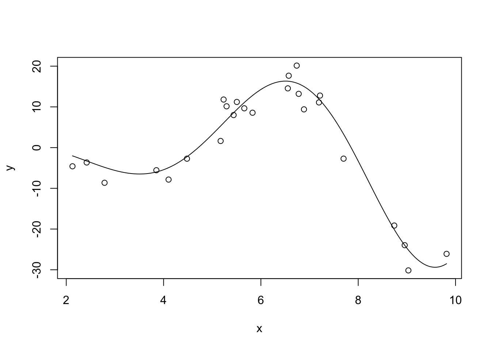
We can now fit some linear models to this data (shown in color): we use R’s built-in poly function to automatically create the polynomials we seek. You can think of poly(x, k) as creating k features \(x^1, x^2,
\dots, x^k\) but it actually does something a bit more subtle under the hood to make model fitting a bit more numerically stable.
plot(x, y)
lines(x_grid, Ey_grid)
for(k in 1:5){
m <- lm(y ~ poly(x, k))
yhat <- predict(m, data.frame(x = x_grid))
lines(x_grid, yhat, col=k+1)
}
legend("bottomleft",
c("True Regression Function",
"First Order (Linear) Fit",
"Second Order (Quadratic) Fit",
"Third Order (Cubic) Fit",
"Fourth Order (Quartic) Fit",
"Fifth Order (Quintic) Fit"),
col=1:6, lty=1)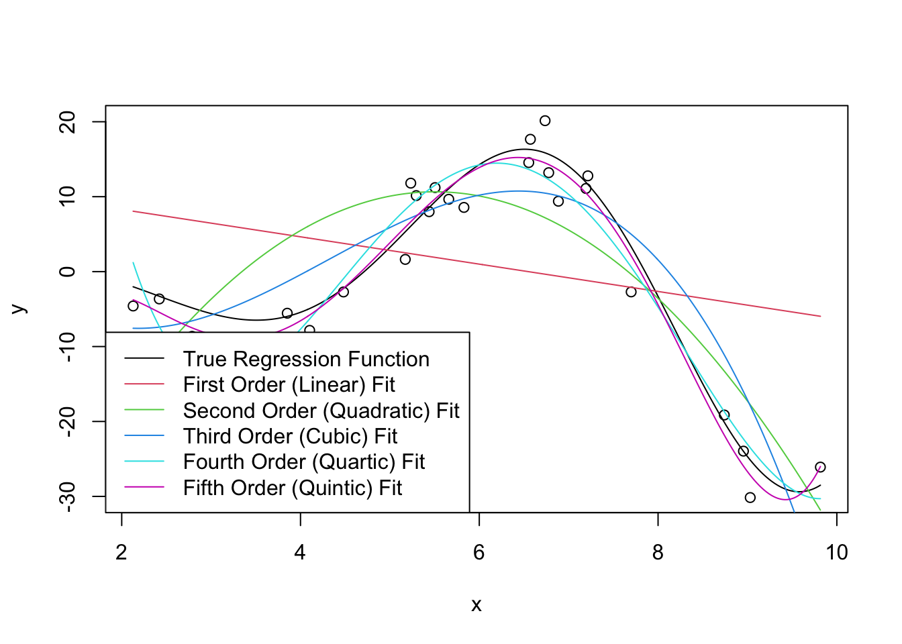
Clearly, as we increase the order of the polynomial, we get a better (in-sample) fit. This makes sense: we know that more features gives us a better fit all else being equal, so what’s the issue?
As usual, the issue occurs for extrapolation. You can actually see some issues already beginning to manifest at the ends of our prediction intervals: the higher-order polynomials go radically different directions as we extrapolate and even the ‘best fit’ (quintic) looks like it’s going to be too steep as we go further.
Let’s expand the prediction region for these fits:
x_pred <- seq(-5, 15, length.out=501)
Ey_pred <- sqrt(abs(x_pred)^3 + 5) * cos(x_pred)
plot(x_pred, Ey_pred, type="l")
points(x, y)
for(k in 1:5){
m <- lm(y ~ poly(x, k))
yhat <- predict(m, data.frame(x=x_pred))
lines(x_pred, yhat, col=k+1)
}
legend("bottomleft",
c("True Regression Function",
"First Order (Linear) Fit",
"Second Order (Quadratic) Fit",
"Third Order (Cubic) Fit",
"Fourth Order (Quartic) Fit",
"Fifth Order (Quintic) Fit"),
col=1:6, lty=1)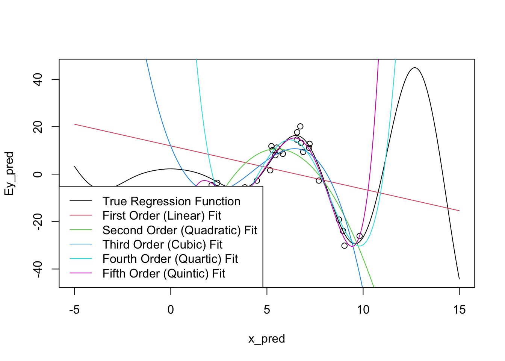
There’s some problems!
To be fair, it is a bit unreasonable to expect these models to perform too well outside of our original sampling area. What’s more worrying is that the extrapolations don’t just miss the curves of the true regression function, they actually create their own even more intense wiggles.
We can also manifest this without extrapolation by fitting very high-order polynomials:
k <- 9
m <- lm(y ~ poly(x, degree=10 + k, raw=TRUE))
yhat <- predict(m, data.frame(x = x_grid))plot(x, y)
lines(x_grid, Ey_grid)
for(k in 1:5){
m <- lm(y ~ poly(x, degree=14 + k, raw=TRUE))
yhat <- predict(m, data.frame(x = x_grid))
lines(x_grid, yhat, col=k)
}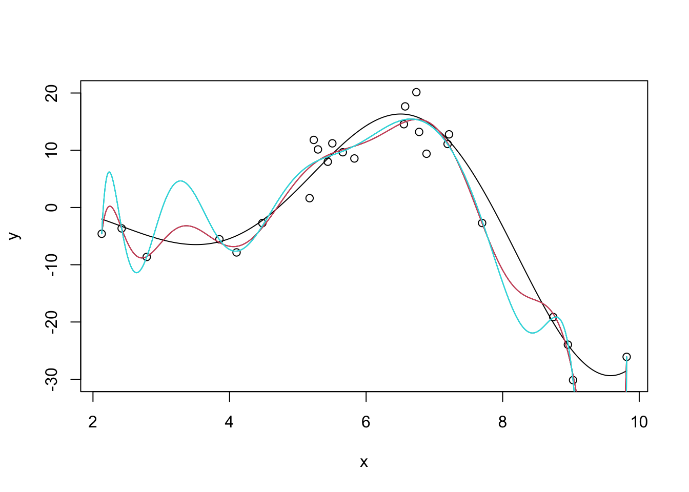
Note that we have to use raw=TRUE here to avoid R complaining about having too-high a degree in the polynomial. (R gives an error about “unique points” but the real issue is one about matrix rank, not ties in x.) I’m also surpressing some warnings here about a sub-standard fit.
So how can we address this ‘over-wiggliness’?
As we discussed last time, we need to use a different set of functions: one that is smooth (like polynomials), but not too-high order. It would also be really nice if we could get something ‘adaptive’ - allowing for more wiggliness where we have more data (and we need more wiggliness) and less wiggliness where we don’t have enough data (fall-back to linearity). ### Local Linear Models
One way to do this is the idea of “local linear (polynomial) models.” Instead of fitting a single (global) line, we can fit different lines in different parts of our data: that way, we can get an upward line when the true (non-linear) relationship is increasing and a downward line when the true relationship is decreasing. Or at least that’s the hope!
plot(x, y)
lines(x_grid, Ey_grid)
# Divide our data into five 'buckets' and fit sub-models
# This works because we've already sorted our data
# (What would happen if we hadn't?)
for(k in 1:5){
xk <- x[(5 * k - 4):(5*k)]
yk <- y[(5 * k - 4):(5*k)]
mk <- lm(yk ~ xk)
y_hat <- predict(mk)
lines(xk, y_hat, col="red4")
}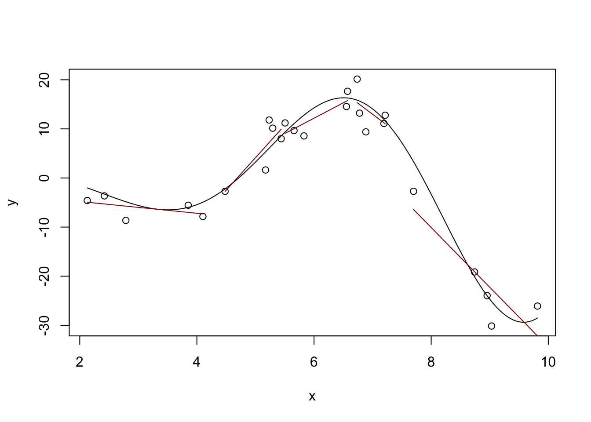
Definitely some rough edges here - particularly in the areas between our buckets, but we’re on a good path. The locfit package will help us with the details:
library(locfit)locfit 1.5-9.12 2025-03-05
Attaching package: 'locfit'The following object is masked from 'package:purrr':
noneEstimation type: Local Regression
Call:
locfit(formula = y ~ lp(x))
Number of data points: 25
Independent variables: x
Evaluation structure: Rectangular Tree
Number of evaluation points: 7
Degree of fit: 2
Fitted Degrees of Freedom: 5.583 plot(x, y)
lines(x_grid, Ey_grid)
y_hat <- predict(m, data.frame(x = x_grid))
lines(x_grid, y_hat, col="red4")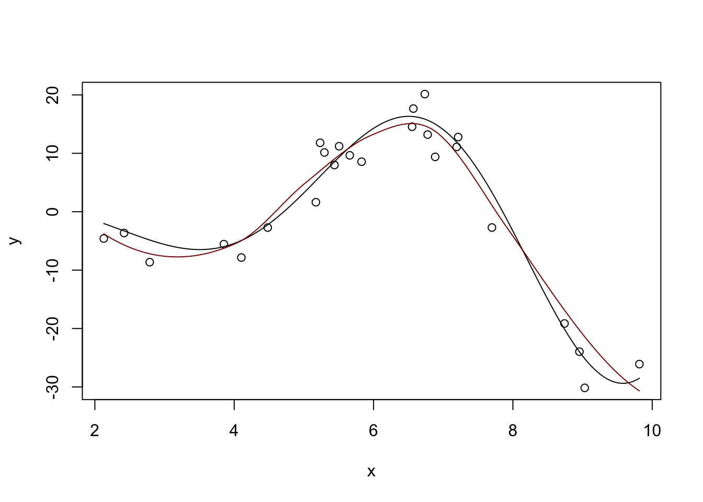
Not perfect, but pretty nice compared to what we had before.
You can also see a discussion of the “degrees of freedom” in the model output. This is not exactly the DoF you learned in earlier classes, but it’s sort of “morally equivalent.” This local fit is about as flexible as a 4th degree polynomial would be for this problem. Even though this model is made out of quadratics, it’s more flexible than a single quadratic. But we avoid the extreme variability associated with a polynomial of that high order. Win-win!
We can tweak some parameters of the local fit to get different responses: the big ones are the degree (deg) and the number of neighbors to use.
?lpEstimation type: Local Regression
Call:
locfit(formula = y ~ lp(x, deg = 4))
Number of data points: 25
Independent variables: x
Evaluation structure: Rectangular Tree
Number of evaluation points: 7
Degree of fit: 4
Fitted Degrees of Freedom: 8.237 plot(x, y)
lines(x_grid, Ey_grid)
y_hat <- predict(m, data.frame(x = x_grid))
lines(x_grid, y_hat, col="red4")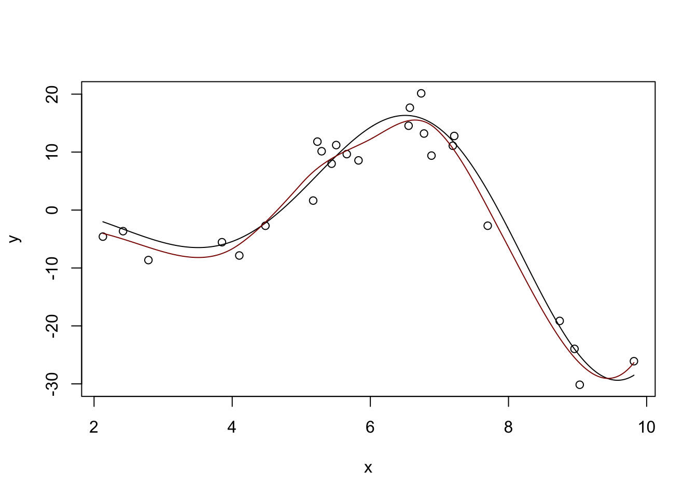
Pretty nice. If we ‘turn down’ the number of neighbors used:
Estimation type: Local Regression
Call:
locfit(formula = y ~ lp(x, nn = 0.2, deg = 4))
Number of data points: 25
Independent variables: x
Evaluation structure: Rectangular Tree
Number of evaluation points: 29
Degree of fit: 4
Fitted Degrees of Freedom: 22.872 plot(x, y)
lines(x_grid, Ey_grid)
y_hat <- predict(m, data.frame(x = x_grid))
lines(x_grid, y_hat, col="red4")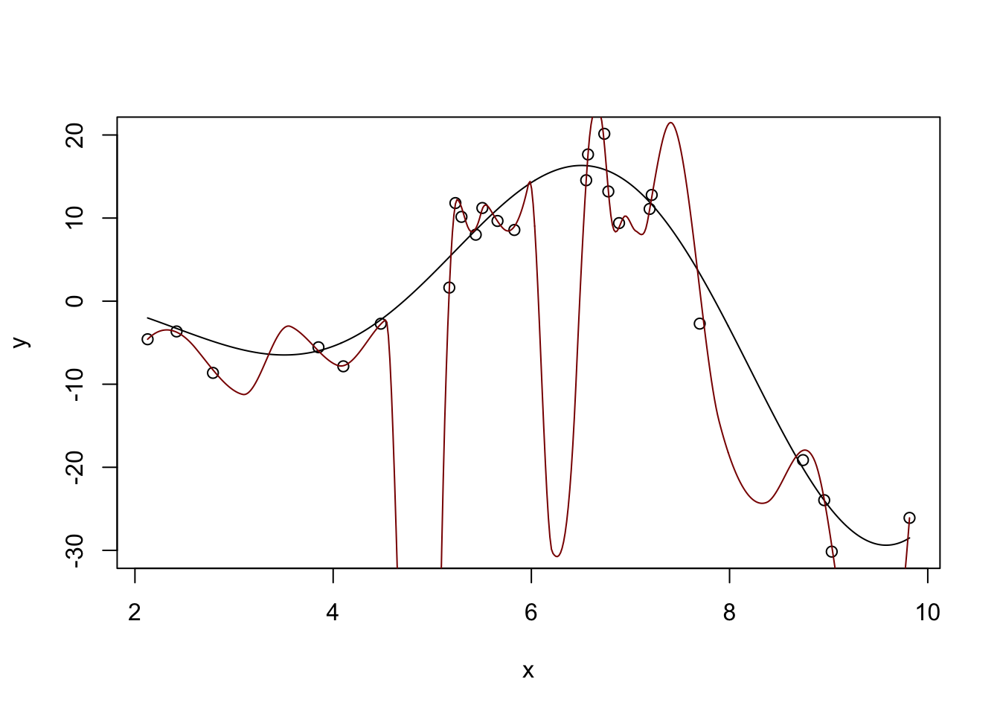
Too far - super crazy! But not entirely unexpected - we know that \(K\)-Nearest Neighbors for small \(K\) has a huge variance.
Too far!
The loess function in base R does this very nicely as well without requiring additional packages. For practical work, it’s a very nice tool for univariate modeling.2
Call:
loess(formula = y ~ x)
Number of Observations: 25
Equivalent Number of Parameters: 5.27
Residual Standard Error: 3.852
Trace of smoother matrix: 5.81 (exact)
Control settings:
span : 0.75
degree : 2
family : gaussian
surface : interpolate cell = 0.2
normalize: TRUE
parametric: FALSE
drop.square: FALSE plot(x, y)
lines(x_grid, Ey_grid)
y_hat <- predict(m, data.frame(x = x_grid))
lines(x_grid, y_hat, col="red4")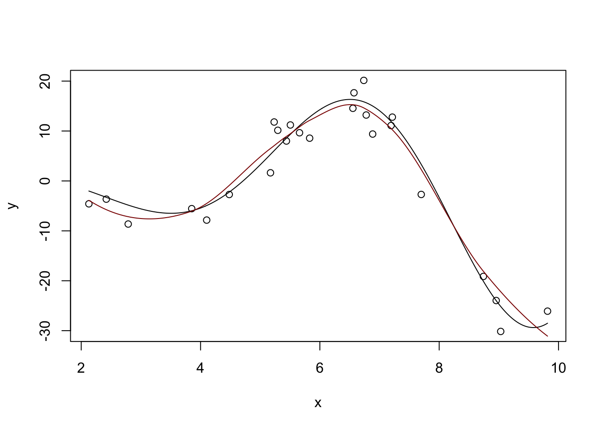
Spline Regression (Additive Models)
Splines
We can generalize this idea a bit using splines. Splines are functions that solve a penalized approximation problem:
\[\hat{f} = \text{arg min}_{f} \frac{1}{2n} \|y - f(x)\|_2^2 + \lambda \int |f''(x)|^2 \text{d}x\]
Here we are saying we’ll take any function (not just a polynomial) that achieves the optimal trade-off between data fit (first / loss term) and not being too rough (second / penalty term).
Why is this the right penalty to use? In essence, we are trying to penalize ‘deviation from linearity’ and since linear functions have second derivative 0 (by definition) the integral of the second derivative gives us a measure of non-linearity.
In some remarkable work, Grace Wahba and co-authors showed that the solutions to that optimization problem are piecewise polynomials with a few additional constraints - these functions are splines. In addition to piecewise polynomialness, splines also guarantee:
- continuity of the function and its derivatives
- linearity outside the range of data fit (‘natural splines’)
Because splines not only match the value of the function at the knots (places where the ‘pieces’ match up) but also the derivatives, they are very smooth indeed.
Stepping back, splines are just a different sort of feature engineering. Instead of using polynomial basis functions (\(x^1, x^2, \dots, x^k\)), splines use a much smoother basis and hence give smoother results, avoiding the ‘wiggles’ problem we saw above.
R provides the basic tools for spline fitting in the splines package. For real work, you almost surely want to use the advanced functionality of the mgcv package. For more on splines and models using them (‘additive models’), see this online course.
We can see that individual splines are quite nice little functions and usually are only non-zero on small regions:
library(splines)
nsx <- ns(x_grid, df=5) # The natural spline basis
plot(x_grid, apply(nsx, 1, max), ylim=range(nsx), type="n")
for(i in 1:5){
lines(x_grid, nsx[,i], col=i)
}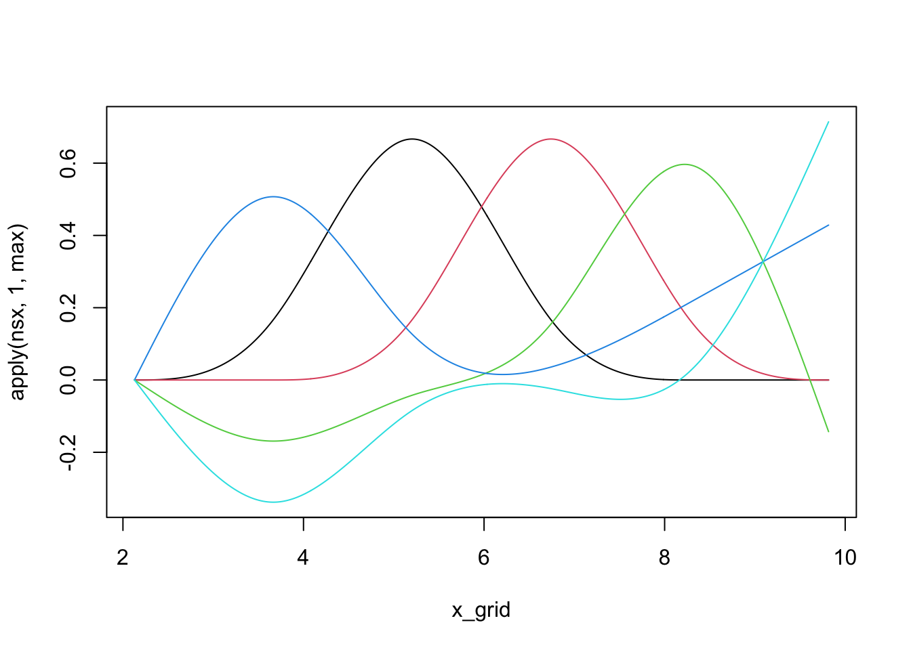
We can use linear combinations of these ‘bumps’ to fit non-linear functions, including our example from above:
m <- lm(y ~ ns(x, df=5))
plot(x, y)
lines(x_grid, Ey_grid)
y_hat <- predict(m, data.frame(x = x_grid))
lines(x_grid, y_hat, col="red4")(This basically matches what we had before with \(\text{DoF} \approx 4.7\), but you can get different answers by messing with the df parameter here.)
Our predicted response is actually the sum of the individual spline effects:
m <- lm(y ~ ns(x, df=5))
y_hat <- predict(m, data.frame(x = x_grid))
plot(x, y, lwd=2)
lines(x_grid, Ey_grid)
for(i in 1:5){
lines(x_grid, ns(x_grid, df=5)[,i] * coef(m)[-1][i], col=i+1)
}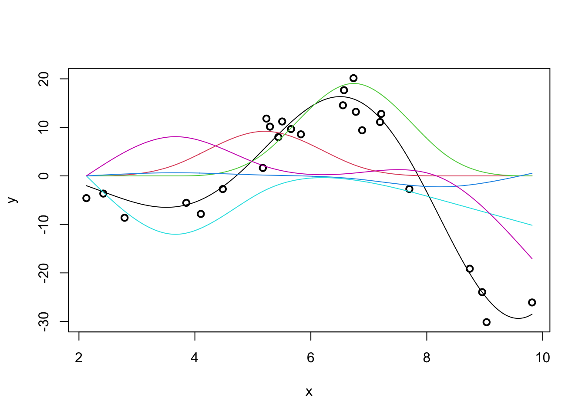
If we were able to sum up the colored lines, we would get the black line back.
We can also see that natural splines give smooth predictions outside the range of the original data:
y_pred <- predict(m, data.frame(x = x_pred))
plot(x_pred, Ey_pred, type="l")
lines(x_pred, y_pred, col="red4")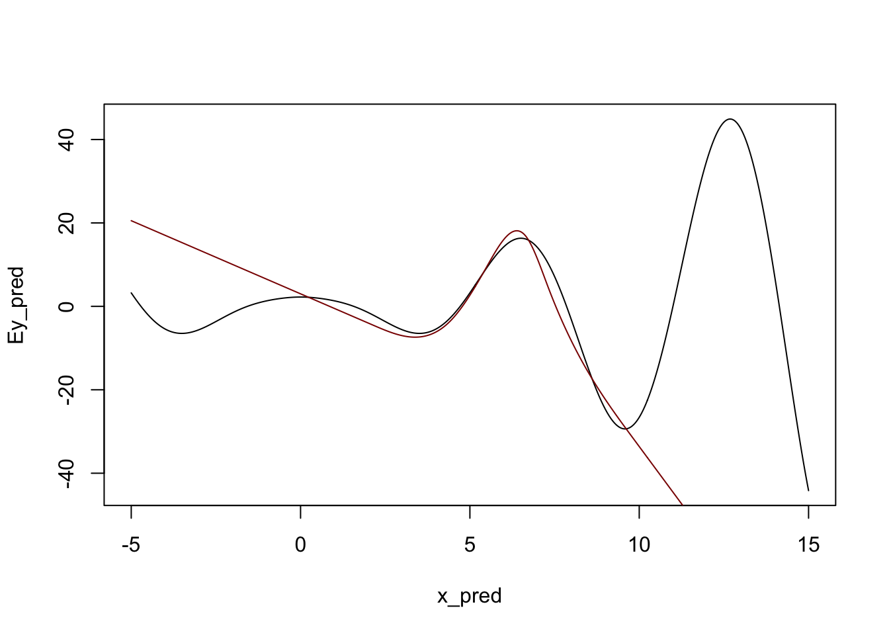
Admittedly, not ideal, but it will do. In particular, note that outside of the ‘data region’, we fall back on a nice comfortable
(You can repeat this process with the slightly more common \(b\)-splines, but the differences aren’t huge.)
m <- lm(y ~ bs(x, df=5))
y_hat <- predict(m, data.frame(x = x_grid))
plot(x, y, xlim=range(x_grid))
lines(x_grid, Ey_grid)
for(i in 1:5){
lines(x_grid, bs(x_grid, df=5)[,i] * coef(m)[-1][i], col=i+1)
}
y_pred <- predict(m, data.frame(x = x_grid))
lines(x_grid, y_pred, col="red4", lwd=2)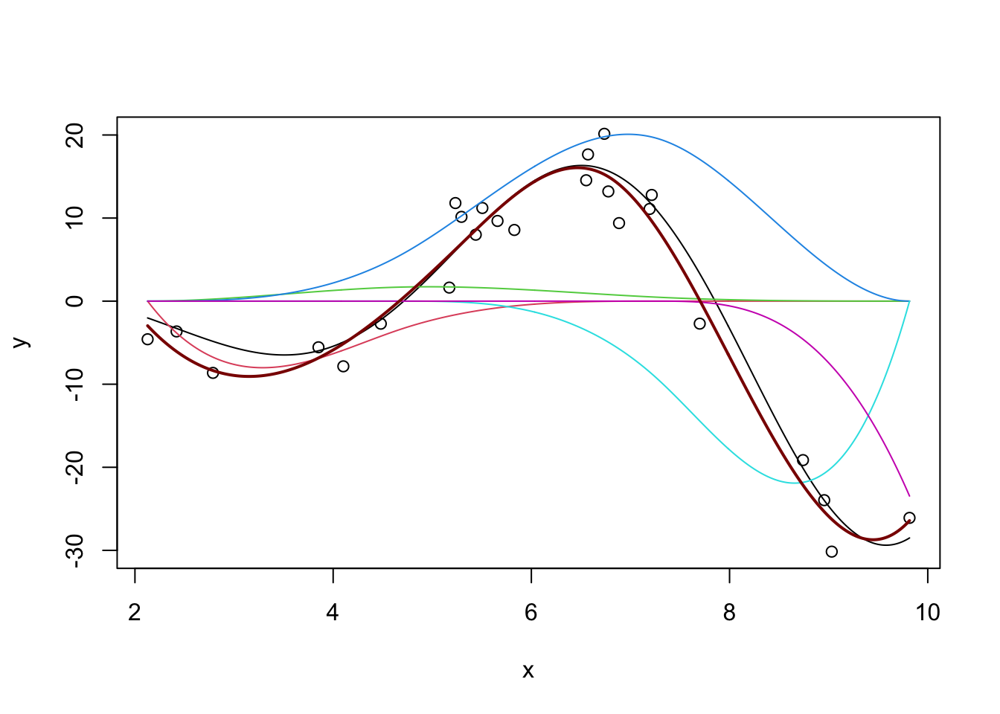
For a ‘full-strength’ version of spline fitting, you can use the mgcv package:
library(mgcv)Loading required package: nlme
Attaching package: 'nlme'The following object is masked from 'package:dplyr':
collapseThis is mgcv 1.9-3. For overview type 'help("mgcv-package")'.
Attaching package: 'mgcv'The following object is masked from 'package:locfit':
lp
Family: gaussian
Link function: identity
Formula:
y ~ s(x)
Parametric coefficients:
Estimate Std. Error t value Pr(>|t|)
(Intercept) 0.9922 0.6735 1.473 0.158
Approximate significance of smooth terms:
edf Ref.df F p-value
s(x) 5.954 7.063 56.27 <2e-16 ***
---
Signif. codes: 0 '***' 0.001 '**' 0.01 '*' 0.05 '.' 0.1 ' ' 1
R-sq.(adj) = 0.943 Deviance explained = 95.7%
GCV = 15.71 Scale est. = 11.34 n = 25m <- gam(y ~ s(x))
y_hat <- predict(m, data.frame(x = x_grid))
plot(x, y, xlim=range(x_grid))
lines(x_grid, Ey_grid)
lines(x_grid, y_hat, col="red4", lwd=2)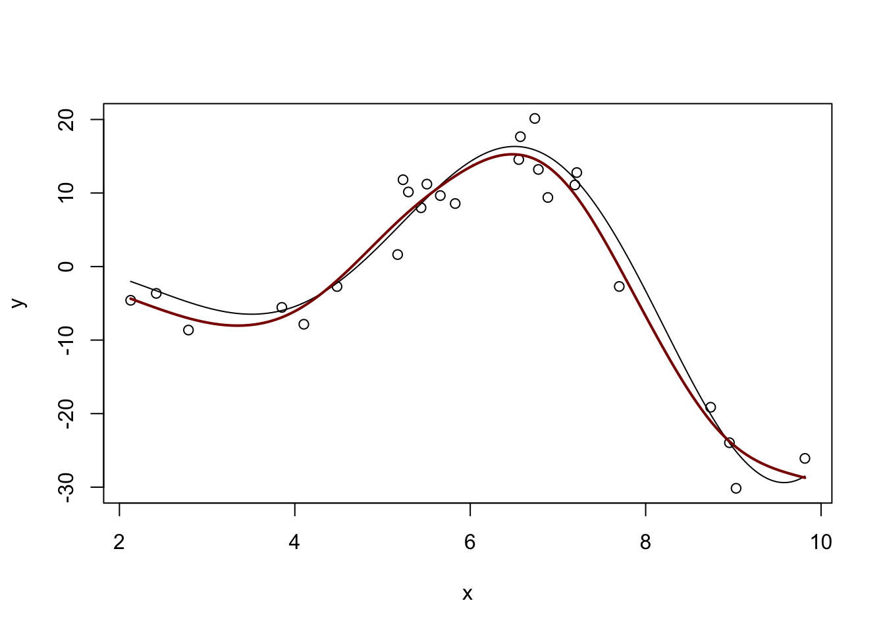
Run ?s to see the many features of the mgcv package. mgcv also includes several specialized splines (e.g. periodic) which you may find useful in some problems.
Splines are not normally consider a ‘machine learning’ tool but they are incredibly useful in applied statistics work. (The two methods you will rely on most from this class are spline regression and random forests.)
\(\ell_1\)-Filtering
Kernel Methods
Manual feature expansion
We can think of feature expansion as mapping our data to a higher-dimensional space \(\Phi: \R^p \to \R^P\) and fitting a linear model there. As we have seen above, splines and their kin provide a useful way of constructing the mapping \(\Phi\), but we are still constrained to work with a fairly restricted type of problem.
Can we generalize this formally to more interesting maps \(\Phi(\cdot)\)? Yes - via kernel methods!
Ridge without coefficients
Before introducing kernel methods formally, let’s look back to ridge regression. We showed that the ridge solution is given by
\[\hat{\beta}_{\text{Ridge}} = (\bX^T\bX + \lambda \bI)^{-1}(\bX^T\by)\]
Some nifty linear algebra will let us rewrite this as
\[\hat{\beta}_{\text{Ridge}} = \lambda^{-1}\bX^T(\bX\bX^{\top}/\lambda + \bI)^{-1}\by = \bX^{\top}(\bX\bX^{\top}+\lambda \bI)^{-1}\by\]
You can prove this using the Woodbury Matrix Identity or we can just check it for a single data set and trust that it generalizes:
n <- 100
p <- 5
X <- matrix(rnorm(n * p), nrow=n, ncol=p)
Ey <- X[,1] + sqrt(X[,2]^2 + 5) + 0.1 * X[,3]^3 + cos(abs(X[,4])) + 1/(abs(X[,5]) + 3)
y <- Ey + rnorm(n, sd=sqrt(0.25))
lambda <- 2
eye <- function(p) diag(1, p, p)
beta_hat_ridge <- solve(crossprod(X) + lambda * eye(p), crossprod(X, y))
beta_hat_ridge_alt <- t(X) %*% solve(tcrossprod(X) + lambda * eye(n)) %*% y
cbind(beta_hat_ridge, beta_hat_ridge_alt) [,1] [,2]
[1,] 0.9069649 0.9069649
[2,] -0.2841681 -0.2841681
[3,] 0.5419055 0.5419055
[4,] -0.2013490 -0.2013490
[5,] -0.2642607 -0.2642607So they are the same! But why did we do this?
It is sometimes a bit more computationally efficient if we have to invert an \(n \times n\) matrix instead of a \(p \times p\) matrix, but there are faster methods if we’re really interested in speed.
Note that, if we want to make a ridge regression prediction now for a new \(\tilde{\bx}\), we just need to compute:
\[\newcommand{\bx}{\mathbf{x}}\begin{align*} \hat{\beta}_{\text{Ridge}}^T\tilde{\bx} &= \left[\bX^{\top}(\bX\bX^{\top}+\lambda \bI)^{-1}\by\right]^T\tilde{\bx} \\ &= \left[\by^T(\bX\bX^{\top}+\lambda \bI)^{-T}\bX\right]\tilde{\bx} \\ &= \by^T(\bX\bX^{\top}+\lambda \bI)^{-1} \bX\tilde{\bx} \end{align*}\]
Intuitively, recall that the inner product of two vectors measures the angle between them and can, up to some scaling, be used as a ‘similarity’ measure. This result essentially says that our prediction on a new data set is a weighted average of the training data, with weights based on similarity of the new point with the training data. This is not a crazy structure…
If we look closer, we see that we only need to compute products of the form \(\bx_1\bx_2\) to make this work. This is where the magic of kernels lies.
Kernel Trick
Earlier, we considered non-linear regression by feature expansion, where we replaced \(\bX\) by \(\Phi(\bX)\), where \(\Phi: \R^p \to \R^P\) maps to a higher-dimensional space (applied row-wise). We can use this mapping in our new ridge formula to get our non-linear predictions as
\[\begin{align*} \hat{y}(\tilde{\bx}) &= \by^T(\Phi(\bX)\Phi(\bX)^{\top}+\lambda \bI)^{-1} \Phi(\bX)\Phi(\tilde{\bx}) \end{align*}\]
Longer, but not necessarily better. If \(P\) is very large, computing with \(\Phi(X)\) can be incredibly expensive.
It turns out, however, that we never need to actually form \(\Phi(X)\), we only need \(\kappa(\bx_1, \bx_2) = \Phi(\bx_1)^T\Phi(\bx_2)\). If we can compute \(\kappa\) directly, we never need to work with \(\Phi\).
Functions that allow this are called (Mercer) kernels and they are just a little bit magical.
If we let \(\K = \Phi(X)\Phi(X)^{\top}\) be defined by \(\K_{ij} = \kappa(\bx_i, \bx_j)\), then we can write our feature-augmented ridge regression as:
\[\hat{y}(\tilde{\bx}) = \by^T(\K+\lambda \bI)^{-1} \kappa(\bX, \tilde{\bx})\]
If we break this apart, we see that our predictions at the new point \(\tilde{\bx}\) are essentially just weighted averages of our original observations \(\by\), weighted by the similarity between the new point and our training points \(\kappa(\bX, \cdot)\). This intuition is super important and we’ll dig into it further below.
Let’s try out Kernel(ized) Ridge Regression:
library(kernlab)
Attaching package: 'kernlab'The following object is masked from 'package:purrr':
crossThe following object is masked from 'package:ggplot2':
alpha## Define a kernel function - we'll spell this out below.
rbf <- rbfdot(sigma = 0.05)
## calculate kernel matrix
K <- kernelMatrix(rbf, X)
dim(K)[1] 100 100Note that this is a \(n \times n\) matrix - not a \(p \times p\) matrix!
We can now use this to make predictions:
krr <- function(x, lambda=1) {
crossprod(y, solve(K + lambda * eye(n), kernelMatrix(rbf, X, x)))
}
krr_MSE <- mean((y - krr(X))^2)
print(krr_MSE)[1] 0.3816487This is better than the OLS MSE:
Why? How is this not a contradiction of everything said before.
But how do we actually do kernel multiplication?
There are many kernel functions in the world. The most common are defined by:
- \(\kappa(\bx_1, \bx_2) = \bx_1^{\top}\bx_2\). This is the linear kernel, equivalent to non-kernel methods
- \(\kappa(\bx_1, \bx_2) = (\bx_1^{\top}\bx_2 + c)^d\). This is the polynomial kernel, equivalent to fitting polynomial regression up to degree \(d\) with all cross products. (The role of \(c\) is tricky, but it essentially controls the relative weight of the higher and lower order terms)
- \(\kappa(\bx_1, \bx_2) = e^{-\sigma^2\|\bx_1 - \bx_2\|^2}\). This is the squared exponential or radial basis function (RBF) kernel; it is very popular in spatial statistics, where it is closely related to a method known as kriging.
While the first two kernels give us a natural \(\Phi(\cdot)\) mapping, the \(\Phi(\cdot)\) for the RBF kernel is actually infinite dimensional: it lets us fit function classes we could not fit without the kernel trick.
For even more kernels, see:
Much of our current understanding of deep learning is based on specialized kernel methods:
- The Neural Tangent Kernel
- Kernel Methods for Deep Learning
- Gradient Descent as a Kernel Machine (This paper is a bit controversial)
This blog is a particularly nice (but still somewhat technical) introduction to the Neural Tangent Kernel and its relationship to neural networks.
Spline theory has also found use to explain ReLU (piecewise linear activation) neural networks:
- Mad Max: Spline Insights into Deep Learning
- Representer Theorems for Neural Networks and Ridge Splines
We can also kernelize some of the other methods we’ve studied in this course.
Notably, we can kernelize \(K\)-Nearest Neighbors to get “KKNN” if we modify the definition of distance used to be “kernel-ish.” We first recall that we can write distances solely in terms of inner products:
\[\begin{align*} \|\bx_1 - \bx_2\|_2^2 &= (\bx_1 - \bx_2)^T(\bx_1 - \bx_2) \\ &= \bx_1^T\bx_1 - \bx_2^T\bx_1 - \bx_1^T\bx_2 + \bx_2^T\bx_2 \\ &= \bx_1^T\bx_1 - 2\bx_1^T\bx_2 + \bx_2^T\bx_2 \\ \implies \text{Kernel Distances} &= \kappa(\bx_1, \bx_1) - 2\kappa(\bx_1, \bx_2) + \kappa(\bx_2, \bx_2) \end{align*}\]
If we compute distances this way for a given \(\kappa\), we get kernel KNN. This is particularly nice when we have kernels that capture specific behaviors (e.g., periodic or embedded categorical) that we can’t really treat as Euclidean.
Trade-Offs between Linear and Non-Linear Methods
Having developed some tools for non-linear regression, let’s step back and ask whether they are worthwhile. Recall our error decomposition:
\[\text{MSE} = \text{Irreducible Error} + \text{Variance} + \text{Model Bias}^2 + \text{Estimation Bias}^2\]
We have already discussed how tools like ridge and lasso let us remove variance at the cost of (estimation) bias.
We argued that this was a worthwhile trade when the problem had a lot of ‘innate’ variance, either from having large noise variance (\(\V[\epsilon] \gg 0\)) or from having many features. In particular, use of some sort of shrinkage (ridge or lasso penalization) was essential in the ‘high-dimensional’ case (\(p > n\)) where OLS had so much variance that it was not even uniquely defined. We also argued that, as we got more and more data (\(n \to \infty\)), the variance took care of itself in the usual statistical way.
These lessons generalize to the non-linear vs linear debate as well. Choosing to use a linear model is itself a variance reducing choice - there are ‘more’ curves than lines in some sense. If we restrict our attention to linear models only, we are potentially accepting some Model Bias, again with a hope of reducing variance to get overall better performance. As such, the same intuition as above applies: linear models are preferred when variance is the primary concern, either from noisy data or from small data; as we get more data, variance decreases naturally, so going to non-linear models reduces bias, giving overall smaller error.
In the non-linear context, the ‘estimation bias / variance’ trade-off remains, but modern tools like mgcv essentially handle this automatically for us. It is of course still there, but mgcv has some nifty auto-tuning built-in.3
Other Topics in Regression
Alternative Loss Functions
For most of this class, we have used MSE as our loss function, building on a foundation of least squares.
Squared (\(\ell_2^2\)) error is a bit interesting: as an error gets larger, it counts even more. This makes OLS/MSE methods sensitive to outliers (in the same way the mean is), but it also implies that OLS won’t work too hard to “over-minimize” small errors.
We can consider some other loss functions: - \(\ell_1\) error (absolute difference): robust to outliers, fits to the conditional median instead of of the conditional mean.
The resulting Median Absolute Deviation (MAD) regression no longer has a closed form, but can be solved quickly using tools like CVX.
-
Huber loss: a blend of \(\ell_2\) and \(\ell_1\) error, which uses \(\ell_2\) for small errors and \(\ell_1\) for big errors. \[\text{HL}_{\delta}(x) = \begin{cases} \frac{1}{2}x^2 & |x| < \delta \\ \delta * (|x| - \delta/2) & |x| \geq \delta \end{cases}\]
This is still convex, so we can solve it with
CVX. \(\epsilon\)-insensitive: \[L_{\epsilon}(x) = (|x| - \epsilon)_+ = \begin{cases} 0 & |x| < \epsilon \\ |x| - \epsilon & |x| \geq \epsilon \end{cases}\] This captures the idea of “close enough is good enough” with “close enough” being defined by \(\epsilon\). It’s a bit unnatural statistically, but relates to an important classification method we’ll cover in a few weeks.
Multi-Task Regression
In some contexts, we may want to perform multiple regressions at the same time. That is, we have a vector of responses for each observation. The OLS generalization is straightforward: \[\newcommand{\bbeta}{\mathbf{\beta}}\newcommand{\bB}{\mathbf{B}}\newcommand{\bY}{\mathbf{Y}}\argmin_{\bB} \frac{1}{2}\|\bY - \bX\bB\|_F^2 \implies \hat{\bB} = (\bX^T\bX)^{-1}\bX^T\bY\] so we essentially just fit different OLS models for each element of the response. This is not super interesting.
Multi-task regression becomes interesting if we want to add structure to \(\bB\): a particularly common requirement is to select the same set of features for each of the regression targets. We do this using a group lasso on each row of \(\bB\): under this structure, if we select a feature for one part of the response, we’ll use it for every part. (Can you see why?)
\[\argmin_{\bB} \frac{1}{2}\|\bY - \bX\bB\|_F^2 + \lambda \sum_{j=1}^p \|\bB_{j\cdot}\|_2\]
Another common requirement is for \(\bB\) to be “low-rank” but we won’t consider that here. If you want to look into it, keywords are “nuclear-norm regularized.”
Weights and generalization
WLS loss: \(\newcommand{\bW}{\mathbf{W}}(\by - \bX\bbeta)^T\bW(\by - \bX\bbeta)\) for known diagonal \(\bW\). Weight samples based on their variance (higher variance gets smaller weights)
-
Weighted lasso: \(+\lambda\sum_{j=1}^p w_j|\beta_j|\). Higher weights are less likely to be selected
Basis of ‘adaptive’ lasso methods (not discussed)
-
Generalized ridge: \(+\frac{\lambda}{2}\bbeta^T\Omega\beta\)
Used to ‘smooth’ \(\hat{\beta}\) - useful for ridge analogue of fused lasso
As we move into Unit II of this course, we turn our focus to classification.
A Taxonomy of Classification
Recall from before that we defined regression as the subset of supervised learning where the response (\(\by\)) was a continuous variable, or at least one that is appropriate to model as such.4 By contrast, classification considers \(\by\) to take values in a discrete set. Though this restriction may feel limiting, it is actually quite powerful. We consider several different forms of classification, based on the support of \(\by\):
-
Binary classification: in this simplest case, \(\by\) takes one of two values, which we conventionally code as \(\{0, 1\}\) or \(\{-1, +1\}\), depending on which makes the math easier. Note that the actual response need not be these numbers; they are simply a mathematical convenience.
Examples of binary classification include:
- Does an incoming student graduate within the next 6 years or no?
- Does a patient have a given disease?
- Is there a dog present in an image?
- Is this applicant qualified for a job?
Note that, in at least two of these, the underlying question is (arguably) not quite so binary, but we may choose to treat it as such. In particular, when assessing onset of a disease, the actual impairment to the patient is continuous, but it is common in medical practice to “binarize” the outcome. Any of you with aging family members know that cognitive decline occurs long before it’s ‘officially’ Alzheimer’s. Similarly, qualification for a job is perhaps best understood as a continuous (or even purely comparative) quantity “Is A more qualified than B?” but we chooes to binarize it when deciding to whom a job offer should be made.
Recalling your probability theory, there is (essentially) only one distribution on \(\{0, 1\}\), the Bernoulli, so this scenario typically has the cleanest and simplest mathematics.
-
Multiclass classification: in this case, \(\by\) takes values in a set of finite and known, but potentially large, set of outcomes, which we will call \(\Ycal\). Before about 20 years ago, multiclass problems took \(|\Ycal|\) to be not much larger than 2, e.g., which blood type does a sample match or what language is a text sample written in, but much of the modern practical success of machine learning comes from the ability to treat very large outcome sets \(\Ycal\).
For instance, modern computer vision (CV) has moved beyond far simple binary classification:
The famed
ImageNetbenchmark data set has over 20,000 classes (arranged with additional structure) and modern data sets include even more. This can be contrasted with the olderMNISTdata set which collects only ten handwritten digits.Beyond CV, large multiclass classification has also revolutionized text modeling: when a chatbot generates text, it selects the next word from a large but finite set of English words.
Just like binary classification is rooted in the Bernoulli distribution, multiclass classification is rooted in the categorical distribution. When applied to a large class of outcomes, the categorical distribution becomes a multinomial, cf Bernoulli to binomial, so multiclass classification is also frequently called multinomial classification.
While our main focus is on binary and multiclass problems, it is worth noting some additional “modes” of classification.
-
Ordinal classification: in this case, \(\Ycal\) is an ordered set. The most common form of ordinal classification is the ubiquitous Likert scale which you have certainly encountered any time you have filled out a customer survey:
- Strongly Agree
- Agree
- Neutral
- Disagree
- Strongly Disagree
In this case, the categories clearly have an order and a ranking, but we can’t quite treat them as ‘numerical’ in the usual sense: Strongly Agree is not just Agree + Disagree.
Proper analysis of ordinal data is tricky and often poorly done. Complexities include the inappropriateness of statisticians’ most beloved tool, averaging5, and a fundamental ‘subjectiveness.’ Another common ordinal classification problem is the assignment of grades (A > B > C …). In this case, students and professors may agree that one piece of work may be better than another, but a student may feel their assignment deserves an A while the professor may judge it B work. It is quite difficult to infer each individual’s personal threshold for each category without extensive analysis.
We will not discuss ordinal data much in this course as it requires specialized methods. Typically ordinal data is modeled by treating the response as a rounded version of some underlying continuous variable: e.g., when grading hurricanes the classes (Category 1, Category 2, …) are derived from the underlying continuous variable of wind speed. This ‘hidden regression’ structure makes analysis of ordinal classification much closer to regression than binary classification.
-
Probabilistic classification: we noted above that binary classification can be thought of as modeling a Bernoulli random variable. If we shift our focus to modeling the Bernoulli parameter (the probability \(p \in [0, 1]\)) than the outcome (\(y \in \{0, 1\}\)), we have the paradigm of probabilistic classification.
As a general rule, statistically-grounded classification methods have a natural probabilistic output built-in while methods coming from the CS tradition are not inherently probabilistic. Because probabilistic estimates are often quite useful, there exist several useful methods to ‘bolt-on’ probabilistic outputs to pure binary classifiers.
Metrics of Classification Accuracy
In the regression context, we had a relatively small number of loss functions:
- Mean Squared Error (MSE): mathematically convenient, easy interpretation, natural for OLS, optimizes for mean
- Mean Absolute Error (MAE): mathematically a bit tricky, most practical in many circumstances, gives rise to robust regression, optimizes for median
- Mean Absolute Percent Error (MAPE)
- Checkmark/Pinball Loss: gives rise to quantile estimation
- Huber loss: interpolates MSE and MAE
By contrast, in the classification context, we have many loss functions to work with. To get into them, it’s worth thinking back to the formalism of statistical hypothesis testing. Recall that, in hypothesis testing, we have a 2-by-2 table of possible outcomes:
| Truth | ||
|---|---|---|
| Decision | Null | Alternative |
| Retain Null | True Negative | False Negative (Type II Error) |
| Reject Null | False Positive (Type I Error) | True Positive |
Suppose that we have a large number (\(n\)) of binary classification points. If we let \(\hat{y}_i\) be our prediction and \(y^*_i\) be the actual outcome, we can construct a similar table:
| Truth (Second index) | ||
|---|---|---|
| Prediction (First Index) | \(y_i^* = 0\) | \(y_i^* = 1\) |
| \(\hat{y}_i=0\) | \(n_{00}\) True Negatives | \(n_{01}\) False Negative (Type II Errors) |
| \(\hat{y}_i=1\) | \(n_{10}\) False Positives (Type I Errors) | \(n_{11}\) True Positives |
From this structure, we get several useful ideas:
A confusion matrix is a 2x2 (or \(K\)-by-\(K\) for \(K\)-multiclass problems) table comparing the right answer (here “Truth” on the columns) with our guess (here “Decision” on the rows). A good classifier will have large values “on diagonal” (\(n_{00} + n_{11}\)) and small values “off diagonal” (\(n_{01} + n_{10}\))
-
The notion of true/false positive/negatives. These can be a bit tricky to remember, but the convention is:
- The noun (positive/negative) captures the prediction
- The adjective (true/false) assesses the prediction
So a “false positive” means that we guessed the positive (+1) class, but that we were wrong and the truth was the negative (-1 or 0) class.
From this simple count table, we can create many different ratios. I find the statistical terminology a bit more intuitive than the ML terminology:
- True Positive Rate: Of the actual positives (\(y^*=1\)), what fraction are predicted correctly (truly) positives (\(\hat{y} = 1\))? \(\text{TPR} = n_{11}/(n_{01} + n_{11})\)
- False Negative Rate: Of the actual positives (\(y^*=1\)), what fraction are predicted incorrectly (falsely) as negatives (\(\hat{y} = 0\))? \(\text{FNR} = n_{01}/(n_{01} + n_{11})\)
- True Negative Rate: Of the actual negatives (\(y^*=0\)), what fraction are predicted correctly (truly) as negatives (\(\hat{y} = 0\))?
\(\text{FNR} = n_{00}/(n_{00} + n_{10})\) - False Positive Rate: Of the actual negatives (\(y^*=0\)), what fraction are predicted incorrectly (falsely) as positives (\(\hat{y} = 1\))? \(\text{FPR} = n_{10} / (n_{00} + n_{10})\)
These clearly satisfy some useful relationships:
\[\text{TPR} = 1 - \text{FNR} \Leftrightarrow \text{FNR} = 1 - \text{TPR}\]
and
\[\text{FPR} = 1 - \text{TNR} \Leftrightarrow \text{TNR} = 1 - \text{FPR}\]
In this scenario, we recognize the false positive rate as the size (or level) associated with a statistical test (5% for a 95% confidence test) and the true positive rate as the power. Again, the statistical definitions can help us navigate the confusing terminology here: the confidence of a test, and therefore its false positive rate, are defined assuming the null (i.e., in a “true” negative scenario).
The “other direction” of rates – where we condition on the prediction instead of the truth – are less common, except for the false discovery rate:
\[\text{FDR} = \frac{n_{10}}{n_{10} + n_{11}}\]
The FDR is commonly used in scientific settings and it answers this question: if a scientist makes \(K\) discoveries, what fraction of those claimed discoveries are correct?
Warning
Note that the convention used to define rates can be quite confusing and is perhaps opposite the convention used to define counts.
To compute the number of true positives, we look at predicted positives and count the number of “truths”, while to compute the true positive rate, our denominator is the number of actual positives and we count the fraction of correct predictions.
To me, the FDR is actually the most clearly named rate; I try to remember the definition of FDR and ‘work backwards’ to FPR since it must be something different than FDR.
In ML context, you will commonly hear reference to precision and recall. With our definitions above, we have
- Precision = \(1 - \text{FDR}\)
- Recall = \(\text{FNR} = 1 - \text{TPR}\)
so, by maximizing precision, we ensure that all of our predicted positives are true positives and, by maximizing recall, we ensure that we have no false negatives (that is, we truly identify all of the real positives).
In the medical context, you may encounter alternative metrics of
- Sensitivity, equal to TPR
- Specificity, equal to TNR
This zoo of terms is admittedly quite confusing, but the Wikipedia article on Precision and Recall has an excellent table.
Combining Metrics
If you look at the 2x2 table above, you can convince yourself that it has two “degrees of freedom:” having a high TPR implies nothing about the TNR (or equivalent metrics). That is, it is possible to have a classifier with arbitrarily good TPR (equivalently, small FNR) and terrible TNR (equivalently, small FPR).
In fact, we can construct one trivially:
\[\hat{f}(\cdot) = 1\]
That is, the function that predicts \(1\) always. This classifier has zero false negatives, because it has no negatives whatsoever, but it necessarily has many false positives.6
Conversely,
\[\hat{f}(\cdot) = 0\]
has no false positives, but many false negatives.
Clearly, we need a ‘combination’ metric that combines both degrees of freedom into a single score. Popular choices include:
- Accuracy: the fraction of correct predictions (\((n_{00}+n_{11})/n\))
- Balanced Accuracy: \(\frac{\text{TPR} + \text{TNR}}{2}\)
- \(F_1\) Score: \(2 *(1 - \text{FDR}) / (\text{TPR} - \text{FDR} +1)\)
While these choices are popular, none of them are actually all that suitable for a real application. To properly evaluate a classifier, we need to know the real cost of false positives and false negatives, as well as the population base rates, and balance things accordingly.
For instance, if we are designing a ‘baseline’ medical diagnostic to be used as part of annual physicals, we need to think about what happens with false negatives and false positives.
- If we give a false positive, patients will undergo a better test that costs $1,000 but gives an accurate answer in all circumstances (a “gold standard”).
- If we give a false negative, patients will leave a condition untreated until it becomes far worse, requiring expensive surgery costing $50,000.
In this case, we might desire a classifier that minimizes \[n_{10} + 50 n_{01}\], not any of the of the ‘standard’ metrics. Note also that the particular FPR, FNR of this classifier will depend on the rate of the condition in the population, so we can’t actually find the best procedure by looking at FPR, FNR in isolation.
While this decision-theoretic approach is optimal, it is often quite difficult to characterize in practice. In the example above, for instance, we made the choice to only minimize cost, without seeking to minimize suffering. (What if the untreated condition is incredibly painful? Should we intervene more often?) This sort of decision-making is ultimately very problem-specific and too often ignored in the academic literature. In practice, designing (and optimizing) the correct loss function is far more relevant to business outcomes than finding the best classifier to optimize an irrelevant cost function. procedure requires
Trade-Off of Recall and Precision
Our discussion of ‘trivial’ classifiers that focus on one metric while completely ignoring the other may remind you of the way this is typically solved in statistical testing procedures. We specify a maximum acceptable false positive rate (level or 1 - confidence) and then minimize the false negative rate subject to that constraint; in statistical speak, we seek a test with maximal power.
As we have seen with ridge and lasso regression, there is typically a ‘knob’ (hyperparameter) we can pick to tune a particular classifier. It is common to apply the classifier at all values of this knob, measure the TPR and TNR at all levels, and plot them in a trade-off curve. This curve is, for historical reasons, known as the receiver operating characteristic (ROC)7 curve and it looks something like:
library(yardstick)
library(ggplot2)
library(dplyr)
library(ggplot2)
library(dplyr)
# Example from ?roc_curve
roc_curve(two_class_example, truth, Class1) %>%
ggplot(aes(x = 1 - specificity, y = sensitivity)) +
geom_path() +
geom_abline(lty = 3) +
coord_equal() +
theme_bw()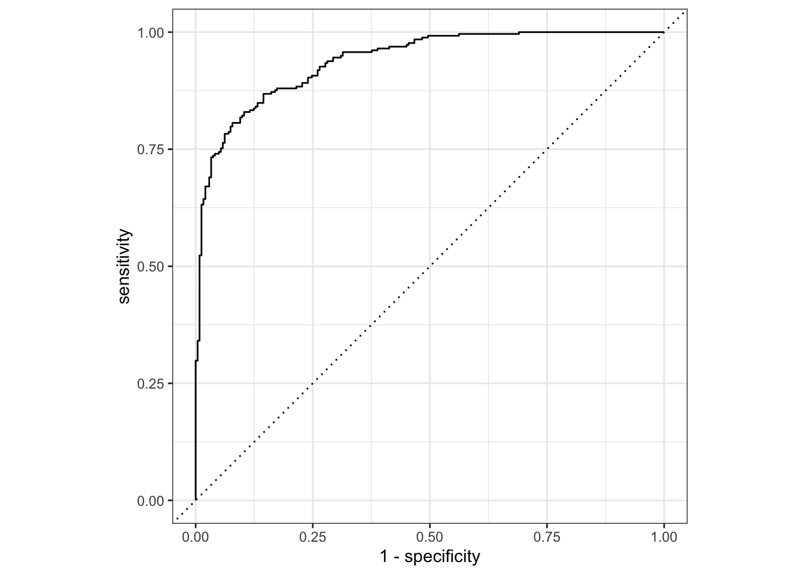
Here we see that, for this particular classifier, increased specificity is associated with decreased sensitivity or, in the alternative terms, increased TNR is associated with decreased TPR. As illustrated by our example of constant predictors above, this is a quite typical trade-off.
Curves like this can be used in a few ways, none of which are fully satisfying:
- If we have two curves, we can plot their ROCs on the same set of axes. If one classifier is uniformly above the other, it is said to dominate the other and is better for all applications. Sadly, this is rarely the case.
- If we have two curves and plot their ROCs, but the ROCs cross, we don’t have strong guidance on which model to prefer, but if one is almost always above the other, we will likely still use it.
A commonly reported metric is the area under the ROC curve (AUC), which ranges from 0.0 to 1.0, with higher values being better. This is a bit unsatisfying compared to the decision theoretic analysis, but it is an improvement over some other metrics as it at least addresses the fact there is a tradeoff.
What does an AUC less than 0.5 imply? If you get an AUC less than 0.5, what should you do? Why is AUC near 0 actually a good thing?
While the ROC is typically motivated by presence of a ‘tuning knob’, even methods like logistic regression (which have no obvious knobs) have an implicit knob we can choose to tune: the classification threshold. There is no law of nature that says that a predicted probability of 55% has to correspond to a prediction of the positive class. If false positives are very expensive, we may want to reduce the fraction of positives predicted and only predict the positive class when the estimated probability is over 80%. Similarly, if false negatives are very bad, we may want to predict positive even when the probability of a positive is in the 40% range: this is particularly common in medical contexts where the impact of a missed diagnosis is quite substantial, so doctors order extra diagnostic work ‘just to be sure’ even if the test does not strongly suggest a disease.
Scoring Functions
Scoring functions are loss functions particularly suited for evaluation of probabilistic classifiers. Unlike our confusion-matrix set of metrics, it’s less clear how we should evaluate probabilistic classifiers.
It is clear that, if we predict something with 80% probability and it doesn’t happen, this is a ‘worse’ mistake than if we only had a 51% probability, but how can we measure this formally?
- Calibration and Tightness
- Log Scores
Types of Classification Methods
In this course, we will consider two main types of classifiers:
Generative classifiers, which attempt to jointly model \((\bX, \by)\) and use probabilistic mathematics (mainly Bayes’ Rule) to infer \(\by | \bX\) from the joint model.
Discriminative classifiers, which directly attempt to estimate the ‘boundary’ between the classes.
As you will see, the terminology around these methods is particularly terrible.
Building Mutliclass Classifiers from Binary Classifiers
As we introduce methods, we will typically derive them for the binary classification task. If we want to apply them to the multiclass task, how can we extend them? It would be quite cumbersome if we needed brand new methods each time.
In general, there are two main strategies we might use:
- One vs Rest
- Each vs Each
For simplicity, assume we are predicting \(K\) classes. In the “one-vs-rest” strategy, we will build \(K\) binary classifiers, of the form:
- Class 1 vs Not Class 1 (i.e., Class 2, 3, 4, \(\dots\), \(K\))
- Class 2 vs Not Class 2 (i.e., Class 1, 3, 4, \(\dots\), \(K\))
- etc.
- Class \(K\) vs Not Class \(K\) (i.e., Class 1, 2, 3, \(\dots\), \(K-1\))
To make an actual prediction, we take the highest score of each of these classifiers. E.g., if \(K=3\) for categories “Red”, “Green” and “Blue”, we might predict:
- \(\mathbb{P}(\text{Red}) = 0.8\) and \(\mathbb{P}(\text{Not Red}) = 0.2\)
- \(\mathbb{P}(\text{Green}) = 0.4\) and \(\mathbb{P}(\text{Not Red}) = 0.6\)
- \(\mathbb{P}(\text{Blue}) = 0.2\) and \(\mathbb{P}(\text{Not Red}) = 0.8\)
Our final prediction would then be the maximizer, “Red.”
This strategy is relatively simple and intuitive, but for very large \(K\), the maximum can be far less than 50%, so it may feel a bit funny. (Why is this not an issue for \(K=2\)?)
Conversely, in the “each vs each” (sometimes called “one vs one”) setting, we train \(\binom{K}{2} = K(K-1)/2\) classifiers for every possible pair of classes. To get the prediction, we then take a ‘majority vote’ of the classifiers.
In our \(K=3\) example above, we would have three classifiers:
- Red vs Blue, which we fit after throwing out the “Green” points
- Red vs Green, which we fit after throwing out the “Blue” points
- Green vs Blue, which we fit after throwing out the “Red” points
If we make predictions for a single point, our binary classifications might be
- Red vs Blue: Red
- Red vs Green: Red
- Green vs Blue: Blue
In this case, we would take a majority vote to get “Red” as our final prediction.
I find this strategy a bit counterintuitive, but it is sometimes faster than the one-vs-rest strategy since each individual model is fit to a subset of the entire data set.
Certain modern ML strategies, in particular deep neural networks, predict the probability of all \(K\) classes from a single model. In this case, we typically select the single most probable class as our prediction.
In applications where there are multiple contenders and the difference between them is small, it is common to randomly select a class in proportion to its predicted probability. This strategy is one of the things that gives ChatGPT its randomness; it usually predicts the most likely next word, but sometimes it does something a little bit weird.)
Note that it is actually usually pretty hard to make a model that predicts a large set of probabilities simultaneously: in particular, it’s hard to get a vector that sums to one (like probabilities should). To address this, a softmax normalization is applied. This is essentially nothing more than i) making sure each predicted value is positive; and ii) dividing them all by the sum so they add to 1.
Footnotes
In other classes, you may have been taught that polynomial regression is a linear model. It is definitely linear in the sense that that class would have used (linear in \(\by\)) but we’re using a different sense here. The core insight of that analysis - that a non-linear function can be expressed as a linear combination of non-linear parts - will appear several times in these notes.↩︎
In Python, the
statsmodelspackage also implements LOESS fits.↩︎If you want to go much deeper into the practical use of additive (spline) models, Simon Wood’s book Generalized Additive Models is fantastic.↩︎
Consider, e.g., predicting someone’s annual tax liability. Technically, this is discrete since tax liabilities are rounded to the nearest dollar, but functionally it may as well be continuous.↩︎
Even though it doesn’t make sense to average ordinal data, University administrators are notorious for averaging Likert data to evaluate faculty. This is a nigh-universal grievance of numerically-minded faculty, but getting universities to change their established procedures to something statistically reasonable is only slightly less impossible than drawing blood from a turnip.↩︎
In this case, the FPR is exactly equal to the negative rate in the population.↩︎
Don’t confuse this with Rate of Change.↩︎